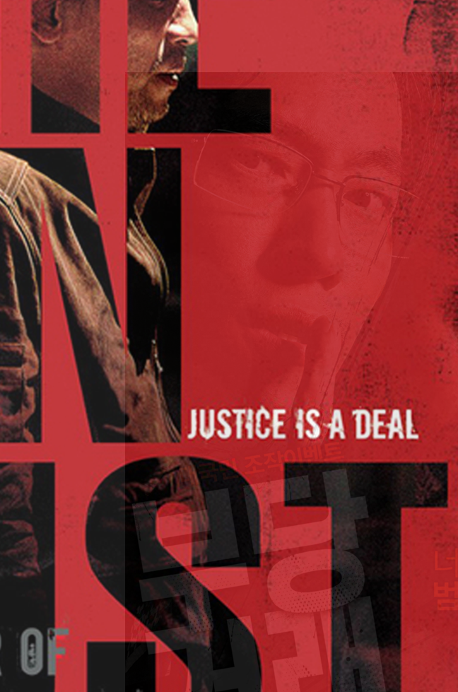

The Unjust
Ryoo Seung-wan
After the rape and murder of 5 elementary schoolgirls, a crime which deeply upsets the entire country, a fleeing suspect is shot and killed by the police. This leads to bad publicity because the guilt of the suspect cannot be proved, and the real attacker may still be at large. Under pressure from the Blue House, a senior police official assigns Choi, a corrupt captain, on a highly sensitive mission, namely to find a former child rapist who can take the blame in exchange for money for his family. Choi, in return, is promised a promotion and the dismissal of an internal investigation against him, which was caused by his illicit collaboration with Jang, a corrupt businessman. Meanwhile, a corrupt prosecutor named Joo cancels the criminal charges against a corrupt businessman named Kim.
Choi searches through several profiles of rapists, and having settled upon Lee, a border-line retarded school-bus driver, he enlists Jang and his henchmen to kid-nap Lee and coach him in how the confession should be delivered. Jang, however, who is rivals with Kim, takes photographs of Kim and Joo playing golf, and has a henchman approach Kim and murder him. The photographs are mailed to Joo to ensure that Jang will never be prosecuted. At the police station, Lee is denied immunity to the death penalty, and as such, reneges on the deal and tells Joo the truth. In response, Jang sends the earlier henchman to suffer arrest and murder Lee from within the jail. This makes Joo furious and he investigates Choi, finding evidence of his and Jang's partnership. Choi, in response, pleads with Joo not to dismantle his career, and the two agree on a truce.
The Korean version of the poster has three images of the actors. The orange text on the right side of the title says "You are the convited criminal from today." The composition of the texts and photos hint that it is an action film. The U.S. verision is filled with texts with the title taking over most of the space. The image of two actors standing back to each other is embedded to the text of the title. The U.S. version is wisely showing the mood of the movie and what to expect from the two actors.